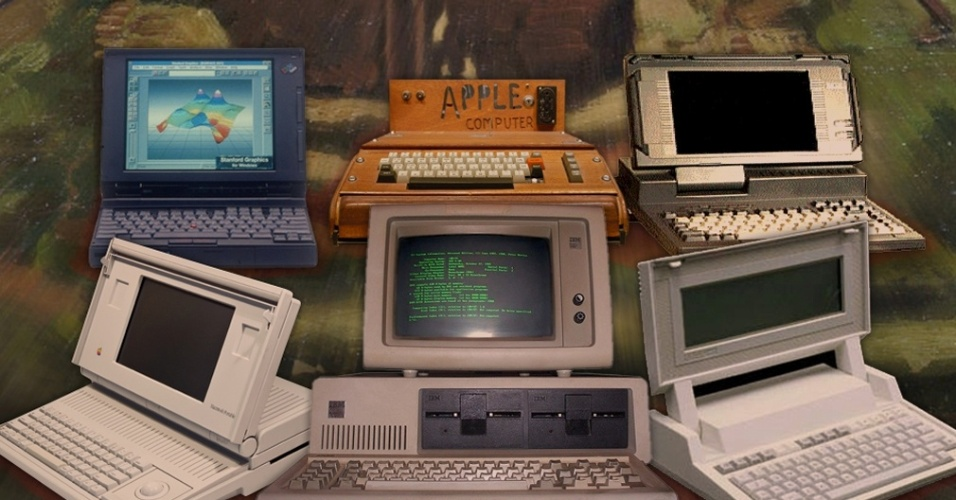
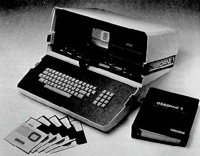
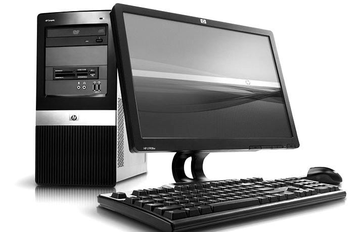

A palavra “computador” vem do verbo “computar” que, por sua vez, significa “calcular”. Sendo assim, podemos pensar que a criação de computadores começa na idade antiga, já que a relação de contar já intrigava os homens. Dessa forma, uma das primeiras máquinas de computar foi o “ábaco”, instrumento mecânico de origem chinesa criado no século V a.C. Assim, ele é considerado o “primeiro computador”, uma espécie de calculadora que realizava operações algébricas. No século XVII, o matemático escocês John Napier foi um dos responsáveis pela invenção da "régua de cálculo".
A primeira geração de computadores surgiu entre a década de 1940 e o final dos anos cinquenta, era composta por máquinas grandes e pesadas. Tratavam-se de calculadoras gigantes que conseguiam realizar cálculos em cerca de 5 segundos. Os computadores da primeira geração usavam válvulas eletrônicas, diferente das calculadoras anteriores que usavam elementos mecânicos ou eletromecânicos. O computador mais famoso da primeira geração foi o ENIAC (Electrical Numerical Integrator and Calculator), de 1943. O ENIAC conseguia realizar em 30 segundos cálculos que antes demoravam 12 horas. Pesava 30 toneladas e foi criado para calcular trajetórias táticas durante a II Guerra Mundial, porém só ficou operacional após o fim da guerra.

A segunda geração de computadores surgiu entre 1956 e 1963. Os computadores desta geração eram menores, mais rápidos, mais confiáveis e mais eficientes do que os da primeira geração. Eles usavam transistores no lugar das válvulas eletrônicas, o que permitiu uma redução significativa no tamanho e no consumo de energia. Além disso, os computadores da segunda geração utilizavam linguagens de programação de alto nível, como COBOL e FORTRAN, permitindo uma programação mais fácil e eficiente.

A terceira geração de computadores, de 1964 a 1971, foi marcada pela substituição dos transistores pelos circuitos integrados, o que permitiu um aumento significativo na capacidade de processamento e uma redução ainda maior no tamanho dos computadores. Esta geração também viu o surgimento dos primeiros sistemas operacionais, que permitiram a execução de múltiplos programas simultaneamente.
A quarta geração de computadores começou em 1971 e continua até os dias atuais. Esta geração é caracterizada pelo uso de microprocessadores, que incorporam milhares de circuitos integrados em um único chip de silício. A introdução dos microprocessadores levou ao desenvolvimento dos computadores pessoais, que se tornaram acessíveis ao público em geral. A quarta geração também viu o surgimento de redes de computadores, incluindo a internet, que revolucionaram a maneira como as pessoas se comunicam e compartilham informações.
